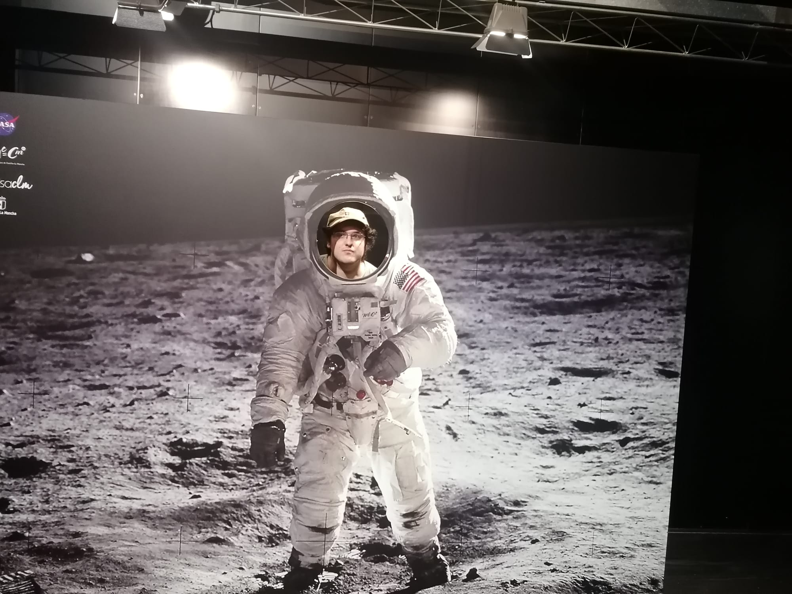

El arte de lo invisible
Una exploración narrativa sobre los pequeños detalles que pasan desapercibidos, pero que sostienen nuestra vida cotidiana.
Leer másHistorias que conectan, palabras que perduran.
Escribo relatos, ensayos y crónicas que exploran lo invisible del día a día: la memoria, el silencio y los pequeños gestos que nos cambian.

Una selección de textos recientes y proyectos personales.
Una exploración narrativa sobre los pequeños detalles que pasan desapercibidos, pero que sostienen nuestra vida cotidiana.
Leer másSerie de ensayos sobre la soledad, la pausa y la necesidad de escuchar lo que no se dice.
Leer másUn relato corto que cruza las sombras del pasado con la luz tenue de lo que aún puede cambiar.
Leer másQuién soy, qué escribo y cómo puedo ayudarte.
Soy Carlos Plaza Castro, un apasionado de la palabra escrita y de las historias que se esconden en lo cotidiano. Escribo relatos, ensayos y piezas breves que buscan dejar una huella emocional en quien las lee.
A través de mi blog y de mis proyectos editoriales exploro temas como la memoria, el silencio, la identidad y las pequeñas decisiones que cambian el rumbo de una vida.
Colaboro con medios, marcas y proyectos culturales que necesitan una voz narrativa clara, honesta y con cuidado por el detalle.
Cuéntame qué necesitas: un relato, un artículo o un proyecto editorial más largo. Responderé lo antes posible.